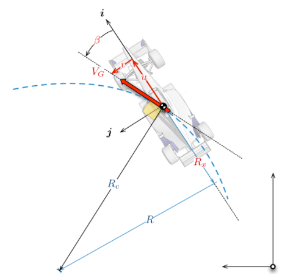
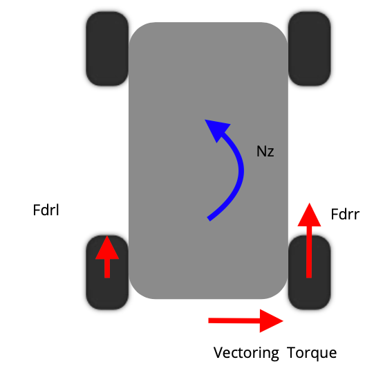
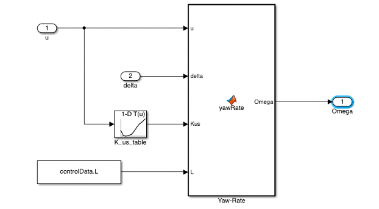
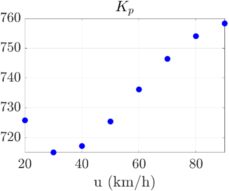
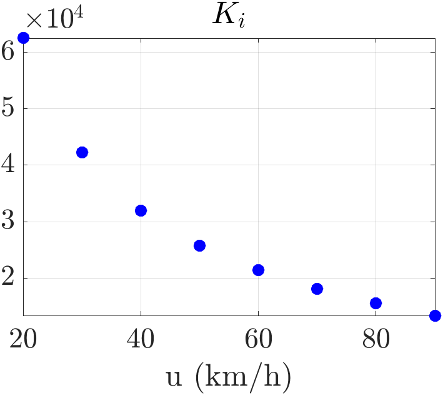
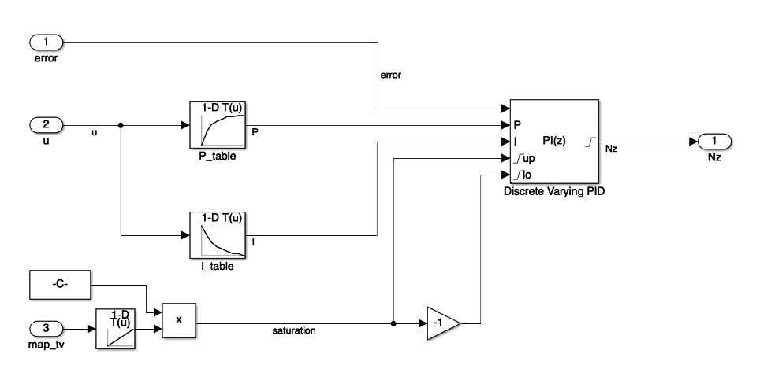
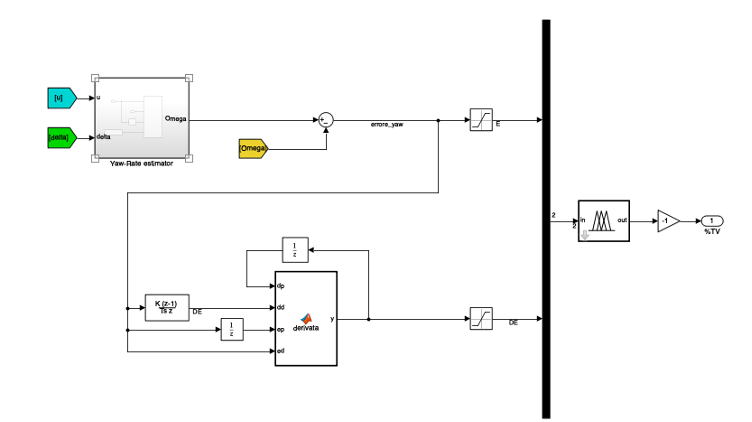
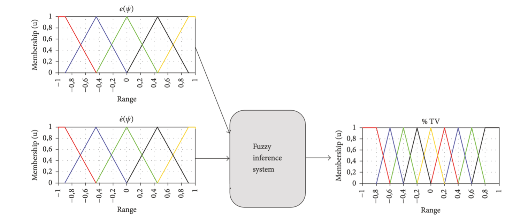
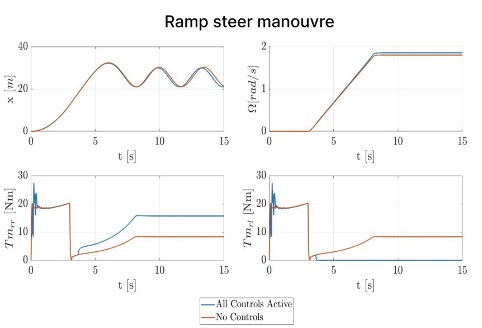

Torque Vectoring Theory
Introduction to Lateral Dynamics
The control system VDC (Vehicle Dynamic Control), also known as ESP, VDS or DSC, is an active security system used to correct the vehicle trajectory in emergency conditions and with low adherence. In particular, the main two conditions that this control wants to reduce are understeer and oversteer. Both the behaviours can be compensated by generating a proper yawing or anti-yawing torque. For vehicles endowed with active differential, the implementation of this control is mainly realized with Torque Vectoring.
Reference system
The reference systems adopted for the dynamic behaviour analysis are shown in Figure 1. The origin of the mobile system is positioned at the intersection between the roll and the symmetry axis. Furthermore, the \(\mathrm{x}\)-axis is always longitudinal to the vehicle. The velocities along \(\mathrm{x}\) and \(\mathrm{y}\) are called respectively \(u\) and \(v\) (for the moveable system), whereas the side-slip angle \(\beta\) describes the direction of the resultant vector for the moveable triad.
The other parameter necessary for the moment-by-moment analysis of the position and direction of the vehicle is the yaw angle \(\varphi\) between the fixed X-axis and the x-axis of the mobile system. The steering angle, instead, is called \(\delta\).

Figure 1 - Reference System
Lateral Dynamics Control
For a perfect turning behaviour of the vehicle is necessary to split in a different way the torque of the motors between the two rear driving wheels avoiding both under and oversteer. Because of dissimilar longitudinal forces on the rear tires \(\left(\mathrm{F}_{\mathrm{drl}}\right.\) and \(\left.\mathrm{F}_{\mathrm{drr}}\right)\) is generated a yaw couple \(\left(\mathrm{N}_{\mathrm{z}}\right)\) object of the Torque Vectoring Control (TV). The goal of this control is to maximize the longitudinal properties of the vehicle, allowing high manoeuvrability of the car while cornering.

Figure 2 - Torque Vectoring Principle
The modelling of the TV control is based on the yaw rate (yaw velocity) \(\Omega\) instead of the side-slip angle \(\beta\) because \(\Omega\) is:
-
easier to measure;
-
nearest to the drive perception.
Yaw Rate Estimation
For estimating the yaw rate, the team has connected the inputs given by the pilot, like the steering angle and the accelerator, with the car's behaviour. For the construction of the transfer function, it is possible to start from the single-track linear model of the vehicle, analyzing its dynamic behaviour (Equation 1) depending on the mass of the system \((\mathrm{m})\), the lateral forces \(\left(\mathrm{F}_{\mathrm{y}}\right)\) and the harms of the front/rear axles from the centre of gravity \(\left(L_{f}-L_{r}\right)\).
Equation 1 - Dynamic behaviour of the vehicle
It is possible to rewrite the equations depending on \(\mathrm{C}\) (lateral stiffness of the tires) and \(\rho\) (curvature), considering a linear behaviour of the vehicle in a stationary regime. Solving these equations can be found a relationship between the side-slip angle of the tires (Equation 2 and Equation 3).
Equation 2 - Rewriting of the equations
Equation 3 - Relation between side-slip angles
It is also possible to define the understeering coefficient \((\mathrm{K}_{\mathrm{us}})\) and the general expression of the side-slip angles (Equation 4 and Equation 5), function of the side-slip angle of the chassis \((\beta)\).
Equation 4 - Understeering coefficien
Equation 5 - General expression for side-slip angles
Combining the previous equations can be found a direct relationship between the steering angle \(\delta\) and the yaw rate (Equation 6).
Equation 6 - Relation between the steering angle and the yaw rate
It is possible to introduce a first-order system with a \(\tau_{\text {driver }}=0.1\) (Equation 7), considering the slight delay in the driver's response (especially during steering maneuvers) due to his reflexes and the nonlinearity of the real world. The \(\Omega_{\text {des }}\) becomes:
Equation 7 - Yaw rate expression with the adding of a first-order filter
The filter for the driver response has been modelled in the block of the vehicle model in which the simulated inputs of the driver (brake, throttle, and steering angle) are computed for different manoeuvres.
With this model, the pilot will be able to generate the desired yaw rate, acting directly on the steering angle and indirectly on the longitudinal velocity of the vehicle. The transfer function, by the way, depends on the lateral behaviour of the car through the parameter \(\mathrm{K}_{\mathrm{us}}\), which can affect the vehicle response:
-
Understeering Vehicle \((K>\mathbf{0})\) : the vehicle curves less than desired. This behaviour is often applied to commercial cars;
-
Neutral Vehicle \((K=0)\)
-
Oversteering Vehicle \((K<\mathbf{0})\) : the car tends to curve more than desired. This behaviour is usually employed in racing cars.
For modelling the \(\mathrm{K}_{\text {us }}\) of the vehicle is possible to test this parameter with a fixed steering angle and a variable velocity of the car and building also the handling curves. The resulting Simulink model, employed for Fenice, is described in Figure 3.

Figure 3 - Yaw rate estimation in the Simulink model of Fenice
Realization of the TV Control
For the designing of the control system, the team has adopted two different solutions:
-
PID (proportional-integral-derivative) controller;
-
Fuzzy logic controller.
PID
The PID controller is the first type of control implemented by the team, also in the former car (Chimera) model, to compensate for the error of the reference yaw rate compared with the one measured in practice. For the development of the system, it is possible to start from a linearized singletrack model described with Equation 8. It is possible to build a simplified model (Equation 9): the linear bicycle model (single axel and front steering wheel).
Equation 8 - Linearized single-track model
Equation 9 - Linear Model
The state matrix A depends on the velocity, so the control must modify its action following the speed variation. The team has chosen a PI controller (the derivative of the yaw-rate is already present in the model itself) with variable gain, a first crossover frequency of \(13 \mathrm{rad} / \mathrm{s}\), and a phase margin of 70 degrees with particular attention to disturbances rejection.
The tuning procedure is performed using the MATLAB tools, linearizing the model at different speeds, and tuning a PI controller for the step response. The linearization is made around a steadystate configuration and gives out the transfer functions between the yaw-moment - output of the PI and the yaw-rate. The steering angle must be small \(\left(\sim 5^{\circ}\right)\) to be considered a disturbance.
It is possible to tune a reference controller on the linearized system, respecting some design parameters. The stability requirements are: - Phase margin \(=70^{\circ}:\) it is a large value of phase margin - close to \(90^{\circ}\) - which makes the system stable also with disturbances but delays the response of the controller;
-
Crossover frequency \(=13 \mathrm{rad} / \mathrm{s}\) : after some tuning using different crossover frequencies, it is the most appropriate for the application;
-
Disturbance rejection: to reject model linearization errors or the disturbance from the steering angle, the PID must be tuned for a robust closed-loop system to disturb.
For the gain of the PI, it is possible, in conclusion, to develop a look-up table (Figure 4, Figure 5) for each different set-point velocity, that for Fenice's controller are eigth (Equation 10).
Equation 10 - Set-point velocities

Figure 4 - Look-up table of the proportional variable gain

Figure 5 - Look-up table of the integral variable gain
The lock-up tables found with the tuning are then used as inputs for the PI regulator that controls in closed-loop the error between desired and measured yaw rate (Figure 6)

Figure 6 - PI controller
The output of the PI controller is saturated, imposing a limit to the ammissible values of \(\mathrm{N}_{\mathrm{Z}}(\) Equation \(11)\) in which \(w_{r}\) is rear track width, \(\Delta T_{m_{\max }}\) the maximum torque difference of the motors, \(r_{r}\) the rear wheels radius, \(\tau_{\text {red }}\) the transmission ratio of the gearbox and \(e f f_{\text {red }}\) the efficiency of the gearbox. The \(\Delta T_{m_{\text {max }}}\) is then regulated by the driver on the steering wheel with TV maps, setting a percentage of the maximum \(\Delta T_{m_{\max }}\) (which is equal to \(55 \mathrm{Nm}\) with full TV action active and \(0 \mathrm{Nm}\) with \(\mathrm{TV}\) deactivated).
Equation 11 - Saturation of the PI controller
In reality, as described above, the actuators can be saturated. Consequently, the action of the integral control would continue to grow with an accumulation of error. For this reason, it is possible to introduce an anti-windup system embedded in the PI controller (clamping method). At the output of the yaw rate controller, inverting the Equation 11 is possible to compute the value of \(\Delta \mathrm{T}_{\mathrm{m}}\) for computing the torque that the motors need to apply. The motor torques curves used are also chosen by the driver at the steering wheel, with 6 possible different maps (map 6 is the one that allows the higher longitudinal performances). The team has decided to modify the torque motor saturation favouring cornering behaviour at the expense of longitudinal performances, considering the desired \(\Omega\) not always perfectly reachable (for example, when the motors are saturated). The pre-existing version gave priority to the longitudinal performance keeping constant the sum of the torque of the two actuators. For example, if the driver request was \(70 \mathrm{Nm}\) for each motor with saturation torque of \(80 \mathrm{Nm}\) and differential torque of \(15 \mathrm{Nm}\), a wheel should have \(85 \mathrm{Nm}(5 \mathrm{Nm}\) more than \(80 \mathrm{Nm}\) of the saturation). To keep \(140 \mathrm{Nm}\) of total torque, the other motor must generate \(60 \mathrm{Nm}\) with a resulting differential torque equal to \(10 \mathrm{Nm}(5 \mathrm{Nm}\) less than the desired differential torque). Since the torque vectoring is a lateral controller, this strategy could negatively affect the cornering performance of the controller. So, it is preferable to privilege the differential torque, following the driver's request. For the same previous example, to maintain \(15 \mathrm{Nm}\) of differential torque, one motor must be saturated, and the other must generate \(50 \mathrm{Nm}\). In this way, the total torque is \(130 \mathrm{Nm}\) (previously \(140 \mathrm{Nm}\) ), reducing the longitudinal acceleration but allowing for better cornering behaviour.
In conclusion, it is possible to also limit the errors due to the noise influence that can activate torque vectoring when the driver is not cornering. So, for this reason, the team has decided that torque vectoring control will be active only with steering angle of the front wheels \(|\delta|>2^{\circ}\) and with a longitudinal velocity greater than \(5 \mathrm{~m} / \mathrm{s}\) (for the PI controller).
Slip control combined with PI controller with torque
The team has connected the slip controller outputs as a saturation of the torque vectoring to combine the two controllers (Figure 7). The saturation block limits the torque considering the differential torque output from the torque vectoring: if the higher torque wheel starts to slide, the slip controller reduces the torque for that wheel. In addition, at the same time, it limits the torque at the other wheel too, to maintain the differential torque.

Figure 7 - Slip control combined with torque vectoring PI regulator
Fuzzy
The second type of control, based on fuzzy logic, has been developed recently. In this case, the percentage of torque applied to each wheel has been computed based on the yaw rate and the sideslip angle. The fuzzy logic is an extension of Boolean logic, allowing to obtain results also between 0 and 1. The fuzzy controller use the same yaw rate estimator of the PI regulator, but implement a totally different yaw-rate tracking technique. The fuzzy yaw moment controller manages the lateral torque distribution ( \(\tau_{\text {lat }}\) ) for the vehicle. If \(\tau_{\text {lat }}=-1\), the maximum torque difference will be added to the rear right wheel torque request of the driver and subtracted to the rear wheel of the left side.
The design of the system has been developed with the following structure for the input (Figure 8):
-
5 membership functions for the yaw rate error (computed as for the PI);
-
5 membership functions for the derivative of the yaw rate error (this derivative has a gain lower than 1 to give much importance to the yaw rate error);

Figure 8 - Computation of the torque percentage (fuzzy logic)
Then has been developed also the membership functions for the output (nine), representing the percentage of torque that each motor has to apply to the corresponding rear wheel.
At the end, the rules of this decisional logic of the controller have been written (file TV fuzzy) to establish the I/O behaviour (Figure 9).

Figure 9 - Membership functions
The trapezoidal membership functions have been selected for the boundaries of each variable since the proposed controller tries to minimize each variable and, therefore, accuracy is not the highest priority.
The triangular ones have been used for the rest of the functions, as they provide computationally efficient calculations maintaining acceptable smoothness on the response. The membership functions have been converted in a look-up table to increase the speed in the response [1].
Testing and Tuning
Once the control is tuned, its performances can be evaluated to analyze if it works properly. With all controls active can be shown that the vehicle can anticipate the trajectory thanks to the torque vectoring control developed and described above. In Figure 10 it is described a ramp steer manouvre with and without controls.

Figure 10 - Ramp steer manoeuvre with and without controls
Conclusions
In conclusion, the team has decided to not implement the control for the race, until some robust tests will be performed in a safety track, validating both model and controls. In particular, it’s necessary to understand the influence of the delays due to pilot response, controls and data elaborations and the behaviour in the real word. Furthermore, more tests will be necessary to compare the behaviour of PI controller and fuzzy logic, to understand which is more suitable for the application to a Formula SAE vehicle. From the simulation the PI control is slightly better, both for performances and elaboration time.
Revision History
V1.0 27/10/2021 - Initial release (Francesco Meneghin)